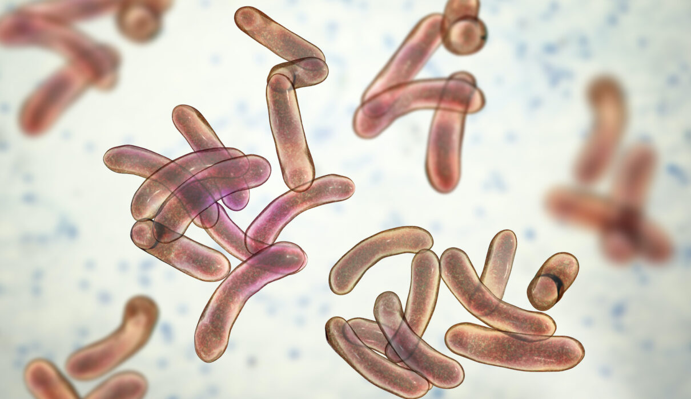

Bacteria
Infectious bacteria and the diseases caused by them.
Bacteria
Bacteria are small single-celled organisms. Bacteria are found almost everywhere on Earth and are vital to the planet's ecosystems. Some species can live under extreme conditions of temperature and pressure. The human body is full of bacteria, and in fact is estimated to contain more bacterial cells than human cells.
The size of Bacteria is 1 μm to 10 μm. They are unicellular, independent/Parasitic organisims. Sometimes many bacteria together form colonies. Bacterial cell is prokaryotic with cell wall, but distinct nucleus or cell organells are absent. They reproduce by simple binary fission. In favourable conditions, bacteria grow vigorously and can double their number in 20 minutes.
Some Bacterias
Dieseases
We are going to be disscusing on 3 types of infectious bacteria and the diseases caused by them. The 3 diseases are Typhoid, Cholera and . So let's get started scrolling.
Helicobactor Pylori
.jpeg)
.jpeg)
Helicobacter pylori(H. pylori) is a type of bacteria. These germs can enter your body and live in your digestive tract. After many years, they can cause sores, called ulcers, in the lining of your stomach or the upper part of your small intestine. For some people, an infection can lead to stomach cancer. Other names: Campylobacter pylori. Causes: Helicobacter pylori spread by fecal oral route Symptoms: Hematemesis, Melena, abdominal pain, nausea Frequency: >50% (2015)
.jpeg)
H. pylori are shaped in a twisting helix, much like a corkscrew. This shape helps H. pylori to take hold and colonize the stomach. pylori eradication rate (1). As the antimicrobial activity of metronidazole is marginally affected by low pH, this drug may be highly effective against H. pylori. The European Helicobacter Study Group has advised to employ a metronidazole-based triple therapy as choice in treating H.
Cholera
A bacterial disease causing severe diarrhoea and dehydration, usually spread in water. Cholera is an acute diarrheal illness caused by infection of the intestine with Vibrio cholerae bacteria. People can get sick when they swallow food or water contaminated with cholera bacteria. Symptoms: Diarrhea
Is cholera still around? Sadly, yes. Each year, 1.3 million to 4 million people around the world suffer from cholera and 21,000 to 143,000 people die of the disease, according to the World Health Organization (WHO).Cholera is an extremely virulent disease that can cause severe acute watery diarrhoea. It takes between 12 hours and 5 days for a person to show symptoms after ingesting contaminated food or water. Cholera affects both children and adults and can kill within hours if untreated. Well, boiling water is a very effective way to disinfect the water. And it will not only kill Vibrio cholerae, the bacteria that causes cholera, but it's a right way to make sure your water is free of any pathogen, any living organism that could cause infection or illness.
News
Let's see some latest news on bacterias. Start scrolling and let the adventure begin.
Activities & Fun
About Us (SAS)